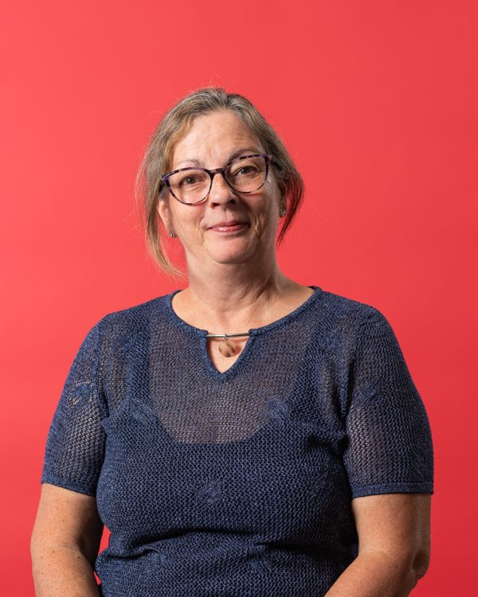

Inspirée depuis son très jeune âge par la magnificence des couleurs du verre, elle travaille le verre de façon autodidacte depuis près de 20 ans, en tentant de repousser ses limites par des courbes osées, des formes irrégulières, des coupes impossibles et des soudures originales.
Maintenant retraitée du monde de l’éducation, elle travaille le vitrail Tiffany et la baguette de plomb à son atelier personnel.
« Le travail créatif avec le verre demande patience et persévérance, subtilité et arrogance pour à la fois s’inspirer et sortir des sentiers battus depuis mille ans. »
[Galerie d’œuvres : images présentes sur le site actuel, à importer dans le CMS]